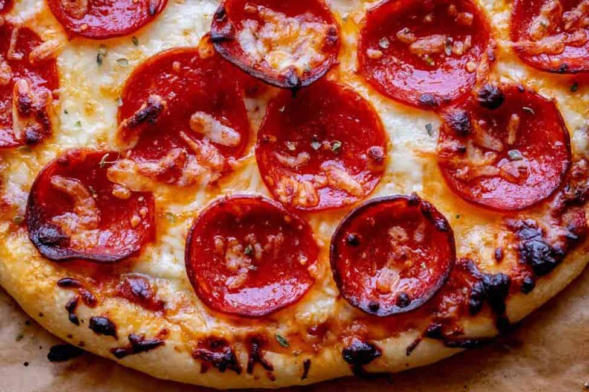

Pizza Recipe

Dish Description:
Pizza is one of the most popular dishes in the world,we all know what it looks like and it comes in a variety of
forms like Neopolitan, Deep Dish,etc. This recipe will show you how to make pizza that looks like it came from a delivery restaurant.
Pizza Ingredients
- 1 16 ounce ball of pizza dough, 12 to 16 ounces is fine
- 1 tablespoon olive oil, for rubbing dough
- 1 cup pizza sauce
- 3 ounces thinly sliced mozzarella cheese
- 5 ounces shredded mozzarella cheese, about 1 and 1/4 cups
- 2.5 ounces pepperoni , about half a 5 oz package
- 2 tablespoons shredded parmesan cheese
- Preheat oven to 550 Degrees F and prepare a work surface
- Roll out the dough and transfer it to a square of parchment paper
- Par Bake for 1-2 mins
- Add Toppings
- Bake the pizza
- Let the pizza cool for a couple of minutes